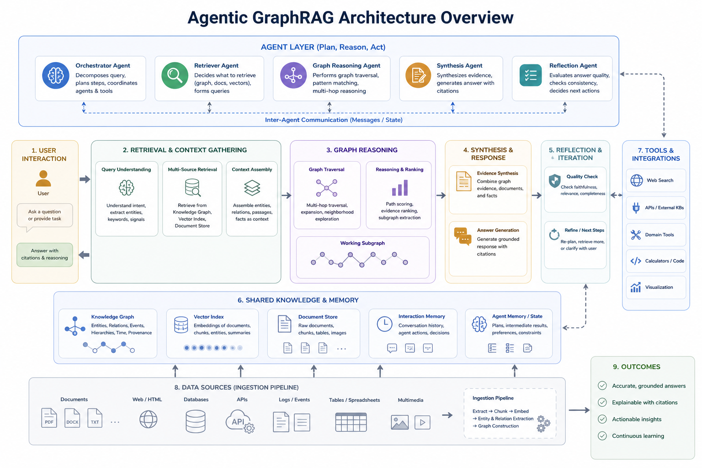
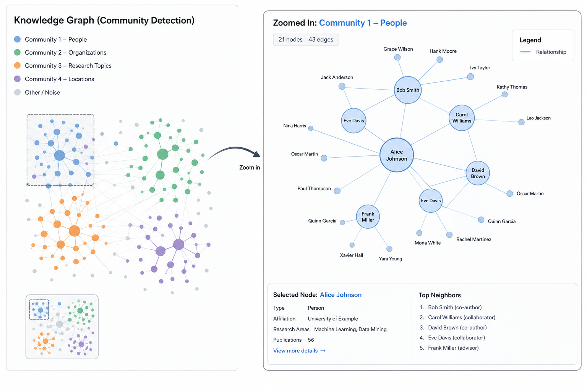
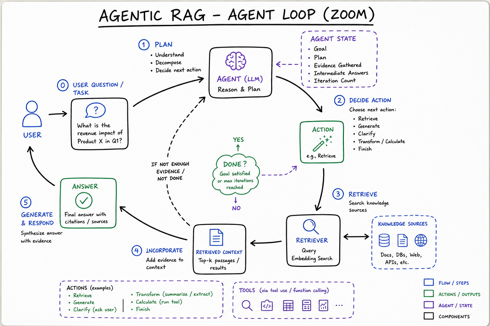

Agentic RAG & GraphRAG // Stretch
Beyond vector chunk retrieval: knowledge graphs with community summaries (Microsoft GraphRAG), plus agent loops that plan multi-hop retrieval, rewrite queries, and synthesize answers across structured + unstructured sources.

Dual index: vector chunks for local facts + knowledge graph (entities, relations, community reports) for global themes. Agent orchestrator chooses retrieval mode, iterates tool calls, and synthesizes grounded answers with citations.
01 — What & Why
Problem: Vanilla RAG fails on global questions (“What are the main themes across 10K docs?”) and multi-hop reasoning (“Which vendor contracts affect Project X’s budget?”). GraphRAG builds a graph index; agentic RAG adds planning loops.
Functional
- Extract entities/relations from corpus at ingest
- Cluster graph into communities with LLM-generated summaries
- Route queries to local (entity-centric) vs global (community) search
- Agent decomposes complex questions into sub-queries and tool calls
Non-Functional
- Ingest cost: GraphRAG indexing is LLM-heavy (10–100× vanilla RAG)
- Latency: agent loops add seconds; cap iterations
- Freshness: graph rebuild on doc change is expensive — incremental updates hard
Interview anchor: GraphRAG = better index structure; Agentic RAG = better query-time strategy. Production systems combine both.
01a — Core Concepts
| Term | Definition | Gotcha |
|---|---|---|
| Entity extraction | LLM/NER pulls nodes (people, orgs, concepts) from text | Hallucinated entities pollute graph |
| Relation triple | (subject, predicate, object) edge in KG | Needs dedup and canonical IDs |
| Community detection | Graph clustering (Leiden) into topic groups | Level of granularity affects global answers |
| Community report | LLM summary of each cluster for global retrieval | Generated offline at index time |
| Local search | Start from seed entities + neighboring chunks | Good for specific fact lookup |
| Global search | Map-reduce over community reports | Good for corpus-wide themes |
| Agentic RAG | LLM plans retrieval steps (tools: search, SQL, graph traverse) | Runaway loops without max steps |
| Self-RAG / CRAG | Model critiques retrieval quality, re-queries | Extra LLM calls per turn |
01b — API / Interface Surface
# Microsoft GraphRAG CLI (conceptual workflow) pip install graphrag # project.yaml: models, chunk size, community levels graphrag index --root ./rag_project # expensive offline pipeline graphrag query --root ./rag_project \ --method global \ --query "What are the top risk themes in our contracts?" graphrag query --method local \ --query "What obligations does Acme Corp have in Q3?"
# Agentic RAG with LangGraph tools (pattern)
from langgraph.prebuilt import create_react_agent
tools = [vector_search, graph_local_search, graph_global_search, sql_query]
agent = create_react_agent(model, tools)
result = agent.invoke({"messages": [("user", complex_question)]})
See LangGraph for agent graph patterns and RAG End-to-End for baseline retrieval API design.
02 — When to Use / When NOT
| Query type | Approach | Why |
|---|---|---|
| FAQ over 500 pages | Vanilla vector RAG | Cheaper; sufficient for local facts |
| “Summarize themes across entire corpus” | GraphRAG global | Community reports pre-aggregate |
| Multi-doc entity reasoning | Graph local + agent | Traverse relations across chunks |
| Real-time news | Not GraphRAG | Index rebuild too slow; use streaming RAG |
| Structured SQL primary | Text-to-SQL agent | Graph optional for join paths |
03 — Architecture
INGEST (offline, $$$)
Docs ──► Chunk ──► Embed ──► Vector DB
│
└──► Entity/relation extract ──► Knowledge Graph
│
└──► Community detect ──► LLM community reports
QUERY (online)
User Q ──► Query classifier (local / global / hybrid)
│
┌────────┴────────┐
▼ ▼
Local: entity seed Global: rank community reports
+ vector chunks + map-reduce synthesis
│ │
└────────┬────────┘
▼
Agent loop (optional): plan → retrieve → critique → answer
▼
Grounded response + citations
04 — Deep Dive: GraphRAG Pipeline
- Chunk documents (same as vanilla RAG)
- Extract entities and relationships with LLM prompts
- Build graph — nodes=entities, edges=relations, link to source chunks
- Detect communities (hierarchical Leiden algorithm)
- Generate community reports — LLM summarizes each cluster
- Query: local = entity-centric subgraph + chunks; global = map-reduce reports

Graph zoom: Leiden clustering at multiple levels → community reports stored as retrieval units. Global query runs parallel LLM map over top-K reports, then reduce into final answer. Index cost dominated by extraction + report generation LLM calls.
05 — Deep Dive: Agentic RAG
Agent decides which retrieval tool to call and whether context is sufficient (ReAct, Self-RAG, CRAG patterns).
# Self-RAG style decision (conceptual) steps = [ "1. Decompose question into sub-queries", "2. vector_search(sub_q) OR graph_local(entity)", "3. Grade relevance: sufficient / insufficient / ambiguous", "4. If insufficient: rewrite query, try global search", "5. Synthesize with citations; abstain if still insufficient", ]
Implement with LangGraph conditional edges and max recursion_limit.

Agent zoom: plan node → tool node (vector/graph/SQL) → grader node → loop or generate. Typical 3–6 LLM calls per user question; budget explicitly in product SLA.
06 — Deep Dive: Hybrid with Vector RAG
- Keep vector index for lexical/semantic fallback
- Graph for entity disambiguation (“Apple” company vs fruit)
- RRF merge graph-derived chunks with dense hits — see RAG hybrid section
- Store
entity_idin chunk metadata for filtered search
07 — Deep Dive: Global vs Local Queries
| Mode | Example query | Retrieval unit |
|---|---|---|
| Local | “What did Jane say about budget?” | Entity Jane + neighbor chunks |
| Global | “Top 5 themes in research papers” | Community reports map-reduce |
| Hybrid | “How does theme X relate to entity Y?” | Global theme + local entity subgraph |
08 — Production & Ops
Cost
- GraphRAG index: budget $LLM calls × chunks × extraction passes
- Agentic query: cap at 5 tool calls; use smaller model for grading
- Incremental: re-index only changed docs + graph patch (complex)
Quality
- Human eval on global questions (vanilla RAG baselines often fail here)
- Entity linking accuracy metrics
- Faithfulness checks on synthesized community reports
09 — Where It Shows Up
- RAG End-to-End — baseline to extend
- Agent Architectures — ReAct / planner loops
- LangGraph — agentic retrieval orchestration
- Vector Databases — chunk index layer
- Embeddings & Semantic Search — dense retrieval primitive
- Web Search Engine HLD — multi-stage retrieval at scale
10 — Common Pitfalls
- GraphRAG for everything: 10× index cost unjustified for simple FAQ
- Hallucinated graph edges: poison multi-hop reasoning — human audit sample
- Unbounded agent loops: cost explosion; always set max iterations
- Stale community reports: doc deleted but report remains
- Skipping vanilla RAG baseline: compare before adding graph complexity